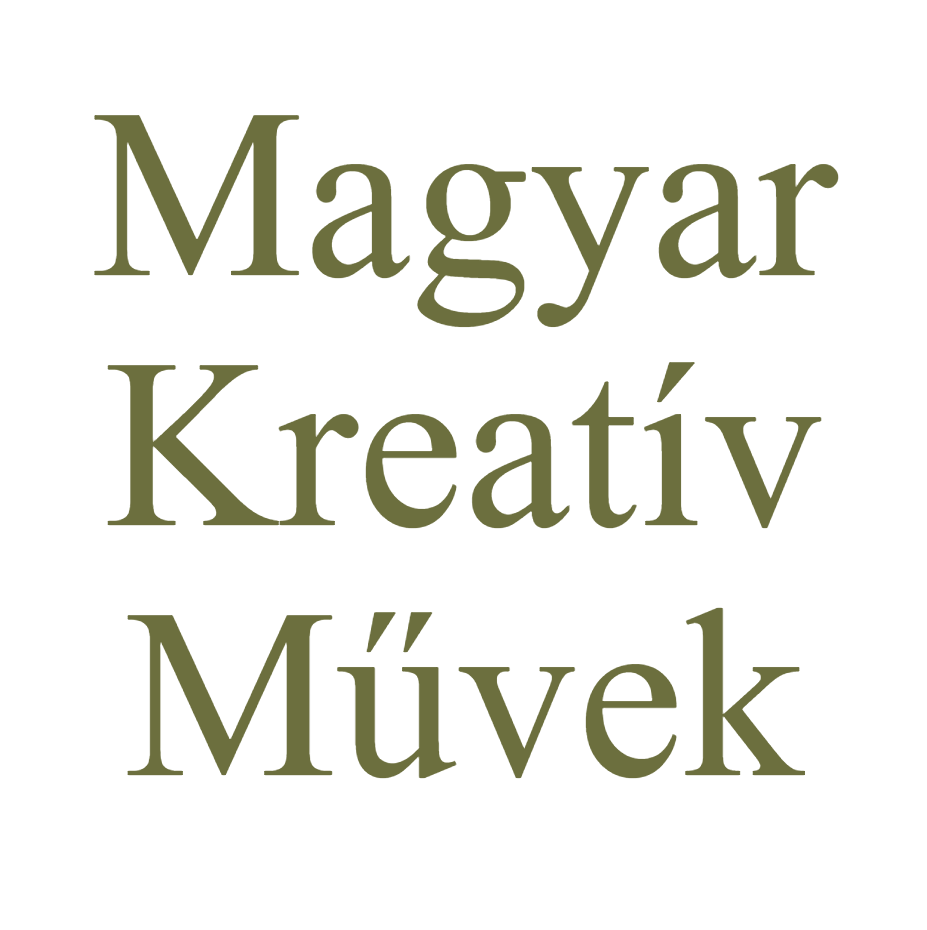

Újgenerációs szövegíró és kreatív praxis Búzás Balázstól.
A történetmesélést, az alapos kutatómunkát és a stratégiai szemléletet ötvözve öntöm hatásos szavakba és kreatív projektekbe olyan vezetőknek és csapatoknak az üzenetét, akik maradandót alkotnak.
Búzás Balázs
Írtam már európai parlamenti programot és egy cégépítő vállalatcsoport új üzletágának teljes koncepcióját, a narratív stratégiától a honlapszövegig. Korábban menedzsment-tanácsadóként dolgoztam Zürichben és Budapesten, majd az Ipsilon Group üzletfejlesztéséért feleltem.
Az Új Paradigma hírlevelemet, amelyben a digitális környezetről és az AI-ról gondolkodtam, vállalkozók, nagyvállalati vezetők és médiaipari döntéshozók olvasták.
Volt egy időszaka az életemnek, amikor egyszerre jártam Európa egyik vezető pénzügyi mesterképzésére és filozófia alapszakra. Értem az üzlet és számok nyelvét is, de a szavakat választottam hivatásul.
Segítek kidolgozni azt a központi történetet, amely tisztázza: mit építesz, kinek, és miért számít igazán. Kapsz egy világos gondolkodási és kommunikációs keretrendszert, amely rendet tesz abban, hogyan beszél a szervezeted önmagáról. Gondoskodom róla, hogy ez az alapnarratíva következetesen jelenjen meg mindenhol a weboldaltól a prezentációkon át a hírlevélig és posztokig.
Ha az alapok már stabilak, az üzenetet hatásos szavakba öntöm. Nem futószalagon gyártok kontentet, hanem szerkesztői szemlélettel alkotok:
Hírlevél: Megtervezzük a koncepciót, a nézőpontot és a formátumot, én pedig folyamatosan írom a leveleket – olyanokat, amiket a célközönséged meg akar nyitni, és valós hatást érnek el.
Közösségi média: A vizuális és AI-zajban a tiszta, okos és stratégiailag felépített szövegekre fókuszálok, amelyek építik a szakmai tekintélyed.
Üzleti szövegek: Vállalati esszék, véleménycikkek, vagy épp befektetői prezentációk (pitch deckek) megírása, ahol a tét és az elvárás is magas.
Törtidőben csatlakozom a szervezetedhez. Olyan, mintha lenne egy saját főszerkesztőd: vezetői felelősséggel gondoskodom arról, hogy minden felületen a kidolgozott stratégia mentén legyetek jelen. Az én dolgom, hogy a történeted mindig jól legyen megírva, és a megfelelő emberek figyeljenek rá, miközben te a cégépítésre fókuszálhatsz.
Stratégiai jövőkutatás az MVM számára: Az MVM innovációs csapata számára egy többhónapos projekt során a stratégiai jövőkutatás módszertanát használva jövőbeli forgatókönyveket írtunk, így támogatva a jövőálló üzleti döntések meghozatalát.
Új termék narratív tervezése és bevezetése a Tropicarium számára: A Tropicarium egy új jegytípust vezetett be, aminek mi alkottuk meg a nevét, a narratív koncepcióját, és végig támogattuk a bevezető kampányt.
Új üzletág narratív tervezése és bevezetése az Ipsilon Group számára: Az Ipsilon Group cégépítő vállalatcsoport számára a vezetésemmel megfogalmaztuk az új üzletág lényegét. Én feleltem a honlapszövegezéstől a hirdetéseken át az értékesítési szövegek megírásáig, valamint rádiós és írott interjúkban képviseltem az üzeneteket.
Koncepcióalkotás és megvalósítás: Társműsorvezetőként és szerkesztőként a koncepció kialakításától az élő műsorok rendezésén át a promócióig felelek a projektért.
Szerzői hírlevélírás és tartalomstratégia: Saját hírlevelet indítottam, ahol a digitális paradigma és az AI társadalmi hatásait elemzem.
Közönségépítés: A hírlevél egy év alatt 30 000+ megtekintést ért el, többszáz feliratkozója között nagyvállalati vezetők, politikai döntéshozók és ismert vállalkozók voltak. A publikációk révén a Partizán Podcast vendégeként is szerepeltem.
Európai Parlamenti program narratívája és megírása: Én feleltem a párt EP-programjának megírásáért, a koncepcióalkotástól kezdve a szerkesztésen át a végső szövegezésig.
Szakmai és kommunikációs vezetés: Egy 30 fős csapat vezetőjeként a teljes szakmai programalkotásért és az ahhoz kapcsolódó kommunikációért feleltem.
A történet képviselete: A kidolgozott szakmai programot és narratívát személyesen képviseltem különböző rendezvényeken, podcast adásokban és televíziós műsorokban.
Adatok narratívába öntése: Nemzetközi ügyfelek (pl. egy közel-keleti elektronikai vállalat, egy svájci logisztikai cég) számára végeztem kutatásokat.
Vállalati szövegírás és koncepció: Én feleltem az új vállalati honlapunk teljes kommunikációs koncepciójáért és a weboldal szövegírásáért.
Menedzsment támogatása: Aktívan támogattam a média- és kormányzati kapcsolatok menedzselését egy gyármegnyitó esemény kapcsán.
Termékbevezetés: Részt vettem három új Baba termék bevezetésének koncepcióalkotásában és a hozzájuk kapcsolódó szövegírásban.
„Balázs felelőssége volt, hogy mindig új gondolatokkal lásson el.”
„Az elején nem akartam a szavakért sokat fizetni, ma már a ChatGPT is tud szöveget generálni. Amikor elkészült az új termék koncepciója, akkor megértettem, hogy ez miért fontos. Azóta azt veszem észre, hogy az ügyfeleim is azokon az új szavakon beszélnek, amit Balázsék írtak.”
„Olyan a közös munka, mintha lenne egy belső filozófusa a cégünknek, aki érti az üzlet nyelvét is.”
A digitális kor lebontja a megszokott intézményeket és együttműködési formákat, de újakat még alig hoztunk létre. Azt gondolom, hogy a maradandó alkotáshoz — legyen az termék, márka vagy bármilyen alkotás — előbb tisztán kell látni és pontosan kell fogalmazni. Ezzel kezdődik minden.
Ha bővebben is érdekel a gondolkodásom, látogass el a Substack oldalamra.
Foglalj egy ingyenes 30 perces konzultációt, vagy keress közvetlenül:
Foglalok